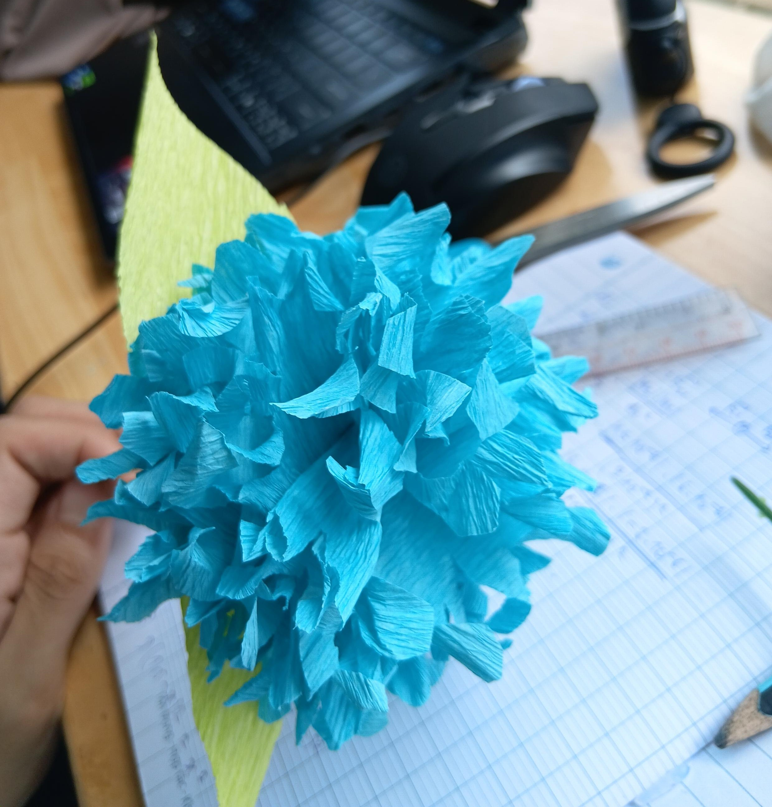

Ngày mốt sẽ là buổi "hẹn hò" đầu tiên của tui và Nhi.
Tụi tui vẫn chưa hề xác định lại mối quan hệ hiện giờ kể từ lúc hai đứa bày tỏ tình cảm dành cho nhau. Vì vậy, tui đã nảy ra một ý tưởng táo bạo đó là sẽ tỏ tình lại và hỏi nhỏ làm bạn gái tui.
Nhưng mà nếu cứ tỏ tình không thì chán quá, không để lại ấn tượng gì mấy. Thành ra tui quyết định là sẽ tự làm một món đồ nào đó để tặng cho nhỏ lúc tỏ tình để giữ làm kỷ niệm. Sau một hồi vắt óc suy nghĩ thì tui nhớ lại trong một lần trò chuyện, Nhi có bảo rằng nhỏ thích hoa cẩm tú cầu, bản thân tui cũng thích hoa này nên tui chốt luôn là tự làm hoa này tặng cho Nhi.
Sau khi tham khảo một vài video hướng dẫn tự làm hoa cẩm tú cầu bằng giấy trên mạng thì tui thấy có vẻ cũng khá dễ làm. Ở nhà tui cũng có tương đối đầy đủ đồ nghề để làm hết rồi. Nhưng mà đời đâu có dễ như vậy, tui không có phòng riêng nên nếu ngồi trong nhà bày ra làm thì kiểu gì cũng bị hỏi cho mà xem. Lúc đó thì không biết bịa lý do gì cho hợp lý luôn. Đang loay hoay không biết tính sao thì một người bạn rủ sáng mai đi đánh cầu lông ở sân gần trường cấp 3 cũ của tui. Ta nói nó hên gì đâu. Cuối cùng thì tui cũng có lý do để xin đi ra ngoài rồi!!
Bây giờ tui đang đứng trong sân cầu lông nhìn tụi bạn đang flex những kỹ năng mà tụi nó học được sau khi bỏ vài củ ra để học chơi cho đàng hoàng. Flex là vậy nhưng cứ mỗi khi tui vô chơi thì tụi nó toàn "giả bộ" đánh trượt không, rõ ràng là đang khinh thường tui mà. Quay lại chuyện làm bông hoa, thú thực lúc này tui vẫn chưa biết sẽ làm cái bông đó như thế nào nữa. Trong mấy video hướng dẫn tui coi sơ qua thì sẽ cần súng bắn keo, một cây gậy để làm cành, và giấy nhúng hoặc giấy nhiễu, tệ hơn thì giấy ăn, kéo thì tui đã mang theo sẵn rồi. Vậy là chỉ còn thiếu ba nguyên liệu để làm thôi. Tất nhiên là ba nguyên liệu đó ở nhà tui có hết nhưng nếu đi lục mà bị phát hiện thì quá rủi ro. Cho nên bây giờ chỉ còn cách duy nhất là ra ngoài mua những gì còn thiếu.
Gần trường cấp 3 cũ của tui có hai cái nhà sách đặt đối diện nhau. Không hiểu sao tự nhiên lại trùng hợp như vậy nữa, bựa hơn nữa là vạch kẻ đường ngay chỗ đó lại là nét liền - tức là không được phép đi xe băng ngang qua bên đường còn lại. Tui chọn đại một cái nhà sách thuận đường đi. Đi dạo một vòng xong thì tui đã lựa được một cây súng bắn keo, nhưng còn cây gậy để làm cành và giấy thì lại không có loại tui cần. Lúc đó tui nghĩ trường hợp tệ nhất là phải đi ra ngoài đầu đường chỗ kia mua khoai lang chiên, xiên que đồ các kiểu để có cây gậy làm cành, còn giấy ăn thì mua dễ rồi, hoặc có khi vô nhà hàng chôm luôn cũng được. Nhưng mà trường hợp đó tệ quá mức có thể rồi. Vậy là tui đặt hết những hy vọng còn sót lại vào cái nhà sách đối diện đó. Thú thực lúc dắt xe ra tui đơ luôn không biết đi làm sao để không bị dính cái vạch nét liền kia. Ở đó cũng không có chỗ để quay đầu nữa. Đứng đơ một hồi thì tui thấy gần đó có mấy ông shipper cũng băng thẳng qua đường như không có gì nên thôi tui cũng đánh liều một phen. Mong vài tháng nữa không có giấy phạt gửi về nhà hic. Và vận may đã mỉm cười với tui thêm một lần nữa, nhà sách này không chỉ có giấy nhúng mà còn có sẵn mấy cái cành hoa giả nữa!!!
Sau khi mua xong xuôi thì tui ghé vô cửa hàng tiện lợi gần đó để làm, theo tui được biết thì tiệm này khá vắng và thực tế là nó vắng thiệt. Lúc vô ngồi làm thì tui chỉ còn đâu đó 45 phút nữa là phải về nhà nếu không má tui sẽ cắt cổ tui mất. Có một chi tiết nãy giờ tui chưa kể đó là tui không hề đi một mình, mà còn có một thằng đệ tử học cùng trường cấp 3 của tui đi theo nữa. Thằng cu đó chiều nay có kèo chở gái đi chơi nên trưa nay không về nhà (lốp xe lăn bánh), sẵn rủ nó đi chung luôn cho vui. Lúc ngồi làm tui cũng bắt thằng đó phụ một tay luôn cho lẹ. Mà nói lẹ chớ rốt cuộc làm cũng gần hai tiếng mới xong. Vừa xong cái là tui lật đật dọn đồ đi dìa liền, để cho gọn tui để lại mấy món cồng kềnh cho thằng kia giữ dùm luôn. Cũng hên sao về nhà mẫu hậu chỉ hỏi xíu rồi thôi, không hề có một dấu hiệu gì là đang giận. Chà, cũng lạ thiệt đó mà thôi kệ đi. Okay mọi thứ đã sẵn sàng, ngày hẹn hò đầu tiên trong đời của tui cũng đã gần cập bến. Chuẩn bị lên đường thôi.

*--- Ngày hẹn hò ---*
Mở mắt ra thì trời vẫn còn tối, kiểm tra đồng hồ thì đã là 5 giờ 30 sáng. Giờ hẹn là 8 giờ 30 nên vẫn còn nhiều thời gian. Tối hôm qua mặc dù đã vô giường ngủ lúc 10 giờ nhưng do háo hức quá nên đến tận 12 giờ hơn tui mới ngủ được, tui định nằm chợp mắt thêm tí nữa mà rốt cuộc cũng không ngủ tiếp được. Nhưng giờ ra khỏi giường cũng không làm gì hết nên tui quyết định nằm suy nghĩ về những gì mình cần phải nói cho hôm nay. Suy nghĩ về nước Mỹ một hồi thì cũng tới 6 giờ, lúc này tui mới ra khỏi giường đi quýnh răng rửa mặt. Tầm 6 giờ 30 kiểm tra điện thoại thì thấy Nhi cũng mới online, chắc hôm nay nhỏ cũng háo hức dữ lắm ha. Nghĩ tới thấy cũng có chút vui trong lòng, lần trước lễ khai giảng Nhi đã cho tui leo cây nửa tiếng rồi nên tui tin lần này Nhi sẽ đi đúng giờ hẹn.
Loay hoay mua đồ ăn sáng các kiểu cũng tới 7 giờ 30. Tụi tui hẹn gặp nhau ở ga metro gần nhà nhỏ, từ ga gần nhà tui đi tới đó là khoảng đâu đó 10 đến 15 phút nên để trừ hao thì 7 giờ 45 tui khởi hành đi luôn. Nhớ những lần trong buổi học môn Critical Thinking, thầy Dương Nguyên Vũ đều nhắc về việc đến sớm trước giờ hẹn ít nhất 5 phút thì mới là đúng giờ. Trước giờ tui cũng có quan điểm rằng cứ đi trước giờ hẹn càng sớm càng tốt thì mình càng được thông thả thời gian, không cần gấp gáp gì hết. Mà hôm nay là buổi quan trọng như vậy nữa nên tui cần phải đi càng sớm càng tốt. Còn nghĩ bụng nếu nay Nhi tới sớm thì tui có thể được gặp nhỏ sớm hơn chăng?
Khi đã tới ga metro gần nhà, trước khi lên tàu tui cẩn thận mở balo để kiểm tra lại xem bông hoa nhét ở trỏng có ổn không. Phần lá hơi bị đè xíu nhưng vẫn tạm chấp nhận được. Trải nghiệm khi lên tàu thì phải nói tui rất là may mắn khi lên trúng ngay cái chuyến tụi học sinh cấp 2 đi nguyên một đoàn xuống Suối Tiên chơi. Toa nào cũng chật ních người, may sao mà vẫn đủ nhét tui vô thêm được. Lúc tàu dừng lại ở mỗi ga, tụi nhỏ đứng gần chỗ cửa ra vào sẽ vẩy tay chào mọi người đứng ngoài. Nghe thì có vẻ dễ thương nhưng nếu tui kể chi tiết hơn thì bọn nó chính xác là đang nghịch ngợm đi vẩy tay khịa người khác thì mới đúng. Lúc tới ga cần đến, thấy tui cần đi ra tụi nó bảo nhau là:
"Ê, né cho chú đi ra kìa."
Trời ơi tui còn chưa sang đầu 2 nữa mà tụi nó gọi là chú luôn kìa. Quá buồn..
Quả thực hôm nay trời nắng rất đẹp, trên đường đi còn có vài vệt cầu vòng nhỏ phản chiếu trên mặt sàn trông rất lung linh. Cứ như xung quanh đang nói rằng buổi hẹn của tui hôm nay sẽ diễn ra rất tốt đẹp vậy. Hoặc ít nhất là tui đang tự nghĩ là như vậy.
Dù sao thì, lúc tui tới là 8 giờ 10 phút, nhanh hơn dự kiến nhiều. Trong lúc ngồi chờ tui mới nhận ra chỗ tui đang ngồi cũng là chỗ tui ngồi chờ nhỏ hôm lễ khai giảng đúng 5 tháng 16 ngày trước. Công nhận thời gian trôi qua nhanh thiệt. Đôi khi tui hay thắc mắc tại sao con người cứ thích chờ thiệt lâu rồi mới ngẫm lại rồi bảo thời gian trôi qua nhanh trong khi nó vẫn như nhau. Mà 5 tháng trôi qua thì cảnh vật vẫn như vậy, không có gì thay đổi, có lẽ thứ thay đổi duy nhất là con người. Mới ngày nào, một thằng nhát cáy như tui lấy hết can đảm để kết bạn lại với Phương Nhi. Mới ngày nào, hai đứa còn đứng đây gặp lại nhau sau một kỳ thi tốt nghiệp dài và căng thẳng, biết nhau đã gần 10 năm nhưng đồng thời lại cũng chẳng biết gì về nhau, cả hai cùng bắt đầu lại tình bạn còn đang dang dở. Mà giờ đây, hai đứa lại chuẩn bị gặp nhau, cùng một địa điểm, chưa phải với tư cách là người yêu nhưng cũng đã biết hết cảm tình của nhau. Cảm giác lúc đó vừa vui vừa thấy chút hoài niệm. Người ta hay nói về chuyện một người có thể thay đổi nhanh như thế nào, đôi lúc tui cũng thấy điều đó có vẻ đúng.
Còn 10 phút nữa trước giờ hẹn thì điện thoại tui nhận được thông báo Nhi react note của tui. Tui không nghĩ nhỏ sẽ là kiểu người vừa ngồi trên xe vừa bấm điện thoại đâu, nên chỉ có hai khả năng là nhỏ còn ở nhà chưa đi hoặc là nhỏ đã tới rồi thôi. Nhưng mà ai lại đứng ngoài đường mở note lên nghe nhạc chứ, nếu có thì ít nhất với Phương Nhi thì tui chắc chắn là không có chuyện đó. Cho nên chỉ còn một trường hợp duy nhất đó là nhỏ vẫn còn ở nhà. Ừ thì nhà nhỏ cũng tương đối gần ga nên tui nghĩ nhỏ vẫn sẽ tới đúng giờ thôi, chỉ là không còn chuyện nhỏ tới sớm nữa.
Đồng hồ đã điểm đúng 8 giờ 30 và nhỏ vẫn chưa xuất hiện. Lúc này tui gần như đã không còn hy vọng gì về việc nhỏ tới đúng giờ nữa. Hmm, để tui thử nhớ lại xem trong mấy buổi đi chơi trước giờ có buổi nào nhỏ tới đúng giờ không. Đa phần mấy buổi đi chơi toàn là tui xuống dưới làng Đại học chờ nhỏ học xong ra rồi đi chơi thôi nên không tính. Còn mấy buổi khác thì, hmmm, có vẻ như là chưa có buổi nào nhỏ tới đúng giờ hết cả...
Bản thân tui cũng có trễ hẹn một lần với nhỏ vào cái ngày hai đứa hẹn nhau học tiếng Anh chung. Bữa đó giờ hẹn là 1 giờ chiều, tui muốn ra khỏi nhà sớm hơn nhưng mẹ tui chỉ cho phép đi lúc 12 giờ là sớm nhất. Theo lý thuyết thì đi từ ga chỗ tui xuống ga Đại học Quốc gia chỉ tốn đâu đó hơn 40 phút nên đi giờ đó vẫn dư dả thời gian. Nhưng mà lúc trên tàu thì tui bất chợt nghĩ đến việc mua đồ ăn vặt cho lúc sau buổi học. Dù sao thì tui cũng thấy có chút tội lỗi khi nhờ vả Nhi dạy tiếng Anh cho mình cho nên tui cũng không nghĩ nhiều nữa mà xuống tàu tại một ga có siêu thị ở gần. Mua đồ xong tui quay lại ga thì còn đâu đó 15 phút gì nữa là tới giờ hẹn rồi, biết là không kịp nên tui nhắn nói Nhi xin phép đi trễ xíu do có việc. Rốt cuộc thì lúc tui tới trường là 1 giờ 5 phút, tức trễ giờ hẹn 5 phút. Kể cả khi trước đó ở buổi hẹn đầu Nhi cho tui chờ 30 phút thì bữa nay tui cũng thấy có chút tội lỗi khi đi trễ. Dù sao thì 30 phút đi trễ của Nhi đó cũng là trường hợp bất khả kháng thôi, còn của tui thì rõ ràng đã có thể sắp xếp trước được nhưng tui đã không làm vậy. Cho nên lần đó tui cũng không bào chữa gì cả.
Quay lại buổi hẹn hôm nay thì Nhi đã tới lúc khoảng 8 giờ 35 phút. Tui sẽ không bàn gì về chuyện đi trễ nữa. Dresscode của hôm nay là màu hồng nhạt.
This is the end of chapter XX.